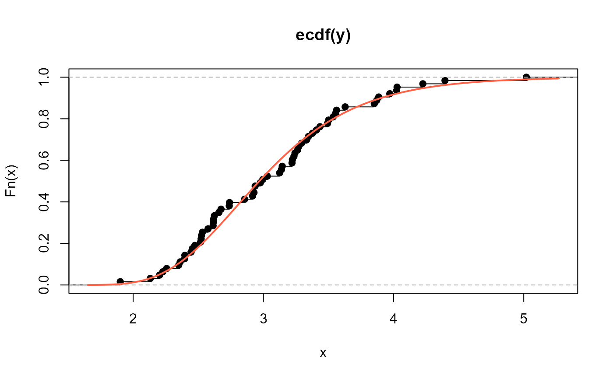
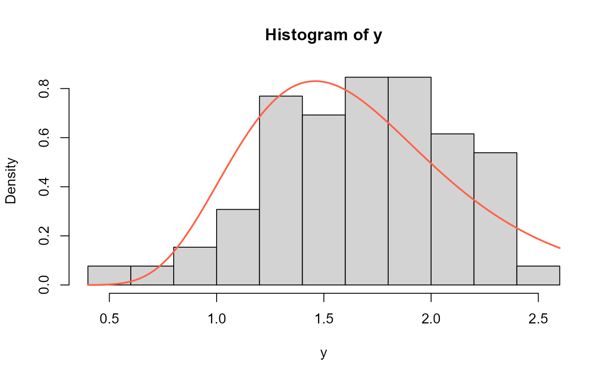
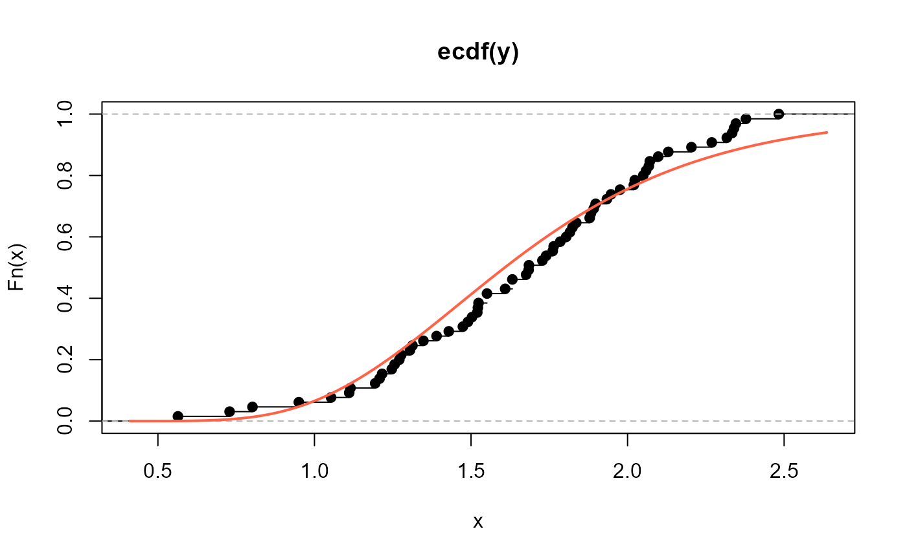
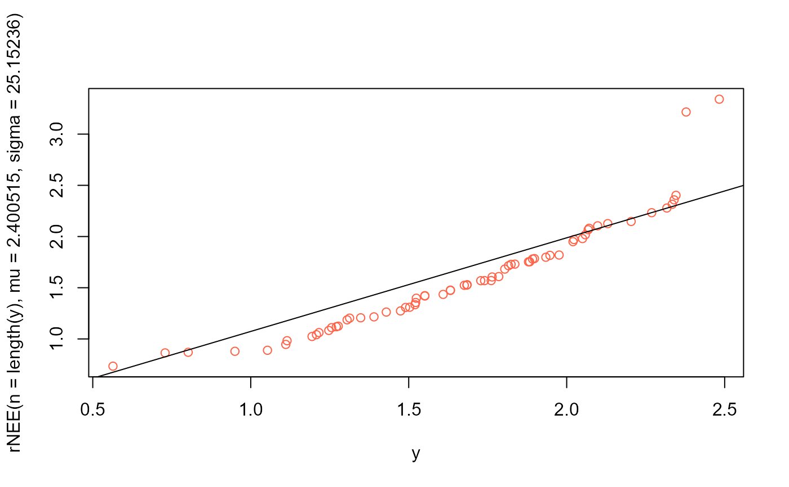
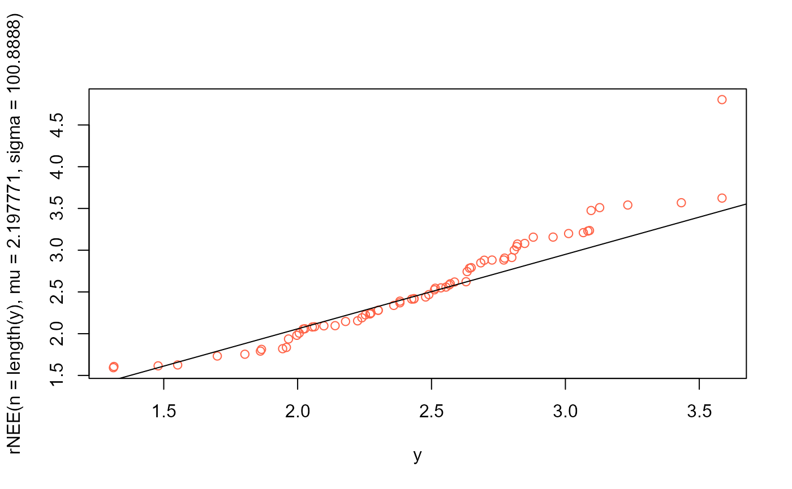

The function NEE() defines the New Exponentiated Exponential distribution, a two parameter
distribution, for a gamlss.family object to be used in GAMLSS fitting
using the function gamlss().
Value
Returns a gamlss.family object which can be used to fit a
NEE distribution in the gamlss() function.
Details
The New Exponentiated Exponential distribution with parameters mu
and sigma has density given by
\(f(x | \mu, \sigma) = \log(2^\sigma) \mu \exp(-\mu x) (1-\exp(-\mu x))^{\sigma-1} 2^{(1-\exp(-\mu x))^\sigma}, \)
for \(x>0\), \(\mu>0\) and \(\sigma>0\).
Note: In this implementation we changed the original parameters \(\theta\) for \(\mu\) and \(\alpha\) for \(\sigma\), we did it to implement this distribution within gamlss framework.
References
Hassan, Anwar, I. H. Dar, and M. A. Lone. "A New Class of Probability Distributions With An Application to Engineering Data." Pakistan Journal of Statistics and Operation Research 20.2 (2024): 217-231.
Examples
# Example 1
# Generating some random values with
# known mu and sigma
y <- rNEE(n=500, mu=2.5, sigma=3.5)
# Fitting the model
require(gamlss)
mod1 <- gamlss(y~1, sigma.fo=~1, family=NEE,
control=gamlss.control(n.cyc=5000, trace=TRUE))
#> GAMLSS-RS iteration 1: Global Deviance = 601.6176
# Extracting the fitted values for mu, sigma
# using the inverse link function
exp(coef(mod1, what="mu"))
#> (Intercept)
#> 2.446043
exp(coef(mod1, what="sigma"))
#> (Intercept)
#> 3.204727
# Example 2
# Generating random values under some model
gendat <- function(n) {
x1 <- runif(n)
x2 <- runif(n)
mu <- exp(-0.2 + 1.5 * x1)
sigma <- exp(1 - 0.7 * x2)
y <- rNEE(n=n, mu, sigma)
data.frame(y=y, x1=x1, x2=x2)
}
set.seed(123)
datos <- gendat(n=500)
mod2 <- gamlss(y~x1, sigma.fo=~x2, family=NEE, data=datos,
control=gamlss.control(n.cyc=5000, trace=TRUE))
#> GAMLSS-RS iteration 1: Global Deviance = 836.8611
#> GAMLSS-RS iteration 2: Global Deviance = 828.078
#> GAMLSS-RS iteration 3: Global Deviance = 825.3264
#> GAMLSS-RS iteration 4: Global Deviance = 824.4661
#> GAMLSS-RS iteration 5: Global Deviance = 824.1988
#> GAMLSS-RS iteration 6: Global Deviance = 824.1156
#> GAMLSS-RS iteration 7: Global Deviance = 824.0895
#> GAMLSS-RS iteration 8: Global Deviance = 824.0813
#> GAMLSS-RS iteration 9: Global Deviance = 824.0787
#> GAMLSS-RS iteration 10: Global Deviance = 824.078
summary(mod2)
#> Warning: summary: vcov has failed, option qr is used instead
#> ******************************************************************
#> Family: c("NEE", "New Exponentiated Exponential")
#>
#> Call:
#> gamlss(formula = y ~ x1, sigma.formula = ~x2, family = NEE, data = datos,
#> control = gamlss.control(n.cyc = 5000, trace = TRUE))
#>
#> Fitting method: RS()
#>
#> ------------------------------------------------------------------
#> Mu link function: log
#> Mu Coefficients:
#> Estimate Std. Error t value Pr(>|t|)
#> (Intercept) -0.17039 0.05690 -2.995 0.00288 **
#> x1 1.50548 0.09929 15.163 < 2e-16 ***
#> ---
#> Signif. codes: 0 '***' 0.001 '**' 0.01 '*' 0.05 '.' 0.1 ' ' 1
#>
#> ------------------------------------------------------------------
#> Sigma link function: log
#> Sigma Coefficients:
#> Estimate Std. Error t value Pr(>|t|)
#> (Intercept) 1.06151 0.09229 11.502 < 2e-16 ***
#> x2 -0.77427 0.16406 -4.719 3.08e-06 ***
#> ---
#> Signif. codes: 0 '***' 0.001 '**' 0.01 '*' 0.05 '.' 0.1 ' ' 1
#>
#> ------------------------------------------------------------------
#> No. of observations in the fit: 500
#> Degrees of Freedom for the fit: 4
#> Residual Deg. of Freedom: 496
#> at cycle: 10
#>
#> Global Deviance: 824.078
#> AIC: 832.078
#> SBC: 848.9364
#> ******************************************************************
# Example 3 --------------------------------------------------
# Obtained from Hassan (2024) page 226
# The data set consists of 63 observations of the gauge lengths of 10mm.
y <- c(1.901, 2.132, 2.203, 2.228, 2.257, 2.350, 2.361, 2.396, 2.397,
2.445, 2.454, 2.474, 2.518, 2.522, 2.525, 2.532, 2.575, 2.614,
2.616, 2.618, 2.624, 2.659, 2.675, 2.738, 2.740, 2.856, 2.917,
2.928, 2.937, 2.937, 2.977, 2.996, 3.030, 3.125, 3.139, 3.145,
3.220, 3.223, 3.235, 3.243, 3.264, 3.272, 3.294, 3.332, 3.346,
3.377, 3.408, 3.435, 3.493, 3.501, 3.537, 3.554, 3.562, 3.628,
3.852, 3.871, 3.886, 3.971, 4.024, 4.027, 4.225, 4.395, 5.020)
mod3 <- gamlss(y~1, family=NEE)
#> GAMLSS-RS iteration 1: Global Deviance = 112.7573
# Extracting the fitted values for mu and sigma
# using the inverse link function
exp(coef(mod3, what="mu"))
#> (Intercept)
#> 2.076862
exp(coef(mod3, what="sigma"))
#> (Intercept)
#> 255.2289
# Hist and estimated pdf
hist(y, freq=FALSE, ylim=c(0, 0.7))
curve(dNEE(x, mu=2.076862, sigma=255.2289),
add=TRUE, col="tomato", lwd=2)
# Empirical cdf and estimated ecdf
plot(ecdf(y))
curve(pNEE(x, mu=2.076862, sigma=255.2289),
add=TRUE, col="tomato", lwd=2)

# QQplot
qqplot(y, rNEE(n=length(y), mu=2.076862, sigma=255.2289), col="tomato")
qqline(y, distribution=function(p) qNEE(p, mu=2.076862, sigma=255.2289))
# Example 4 --------------------------------------------------
# Obtained from Hassan (2024) page 226
# The dataset was reported by Bader and Priest (1982) on failure
# stresses (in GPa) of 65 single carbon fibers of lengths 50 mm
y <- c(0.564, 0.729, 0.802, 0.95, 1.053, 1.111, 1.115, 1.194, 1.208,
1.216, 1.247, 1.256, 1.271, 1.277, 1.305, 1.313, 1.348,
1.39, 1.429, 1.474, 1.49, 1.503, 1.52, 1.522, 1.524, 1.551,
1.551, 1.609, 1.632, 1.632, 1.676, 1.684, 1.685, 1.728, 1.74,
1.761, 1.764, 1.785, 1.804, 1.816, 1.824, 1.836, 1.879, 1.883,
1.892, 1.898, 1.934, 1.947, 1.976, 2.02, 2.023, 2.05, 2.059,
2.068, 2.071, 2.098, 2.13, 2.204, 2.317, 2.334, 2.34, 2.346,
2.378, 2.483, 2.269)
mod4 <- gamlss(y~1, family=NEE)
#> GAMLSS-RS iteration 1: Global Deviance = 87.2635
# Extracting the fitted values for mu and sigma
# using the inverse link function
exp(coef(mod4, what="mu"))
#> (Intercept)
#> 2.400515
exp(coef(mod4, what="sigma"))
#> (Intercept)
#> 25.15236
hist(y, freq=FALSE)
curve(dNEE(x, mu=2.400515, sigma=25.15236),
add=TRUE, col="tomato", lwd=2)

# Empirical cdf and estimated ecdf
plot(ecdf(y))
curve(pNEE(x, mu=2.400515, sigma=25.15236),
add=TRUE, col="tomato", lwd=2)

# QQplot
qqplot(y, rNEE(n=length(y), mu=2.400515, sigma=25.15236), col="tomato")
qqline(y, distribution=function(p) qNEE(p, mu=2.400515, sigma=25.15236))

# Example 5 -------------------------------------------------------------------
# 69 Observations of the gauge lengths of 20m.
y <- c(1.312,1.314,1.479,1.552,1.700,1.803,1.861,1.865,1.944,1.958,1.966,1.997,
2.006,2.021,2.027,2.055, 2.063,2.098,2.140,2.179,2.224,2.240,2.253,2.270,
2.272,2.274,2.301,2.301,2.359,2.382,2.382,2.426, 2.434,2.435,2.478,2.490,
2.511,2.514,2.535,2.554,2.566,2.570,2.586,2.629,2.633,2.642,2.648,2.684,
2.697,2.726,2.770,2.773,2.800,2.809,2.818,2.821,2.848,2.880,2.954,3.012,
3.067,3.084,3.090,3.096, 3.128,3.233,3.433,3.585,3.585)
mod5 <- gamlss(y~1, sigma.fo=~1, family = NEE)
#> GAMLSS-RS iteration 1: Global Deviance = 107.4186
# Extracting the fitted values for mu and sigma
# using the inverse link function
exp(coef(mod5, what="mu"))
#> (Intercept)
#> 2.197771
exp(coef(mod5, what="sigma"))
#> (Intercept)
#> 100.8888
hist(y, freq=FALSE)
curve(dNEE(x, mu=2.197771, sigma=100.8888), add=TRUE,
col="tomato", lwd=2)
# Empirical cdf and estimated ecdf
plot(ecdf(y))
curve(pNEE(x, mu=2.197771, sigma=100.8888), add=TRUE,
col="tomato", lwd=2)
# QQplot
qqplot(y, rNEE(n=length(y), mu=2.197771, sigma=100.8888), col="tomato")
qqline(y, distribution=function(p) qNEE(p, mu=2.197771, sigma=100.8888))
